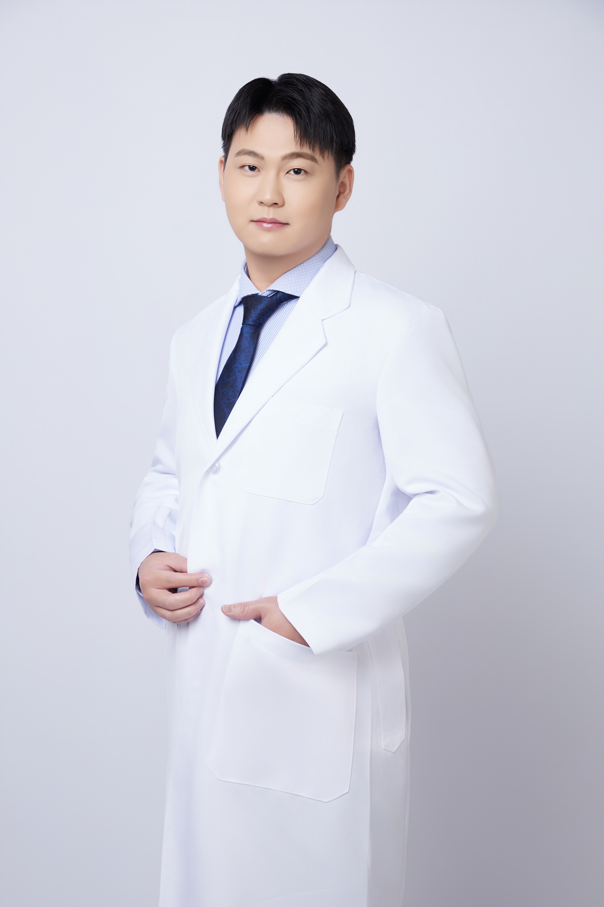
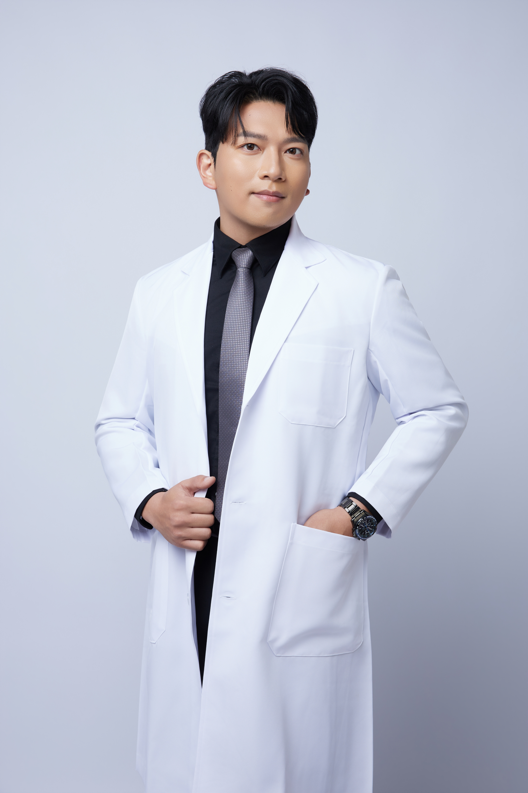
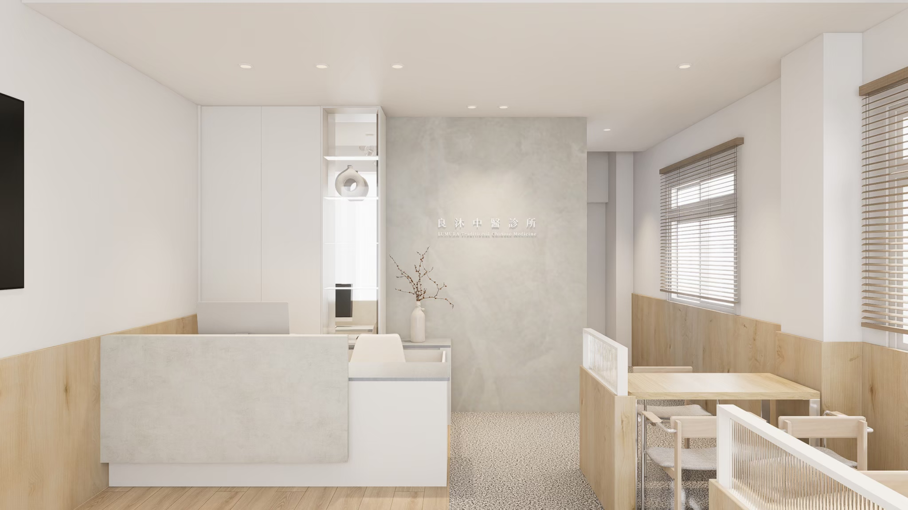
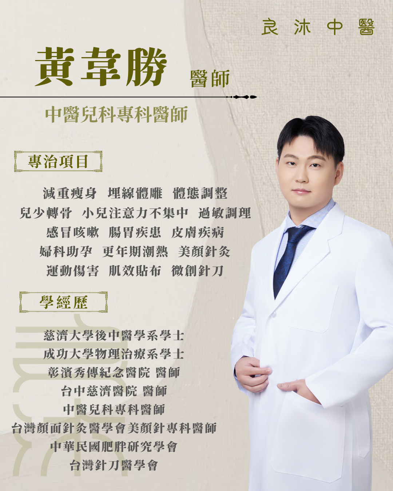
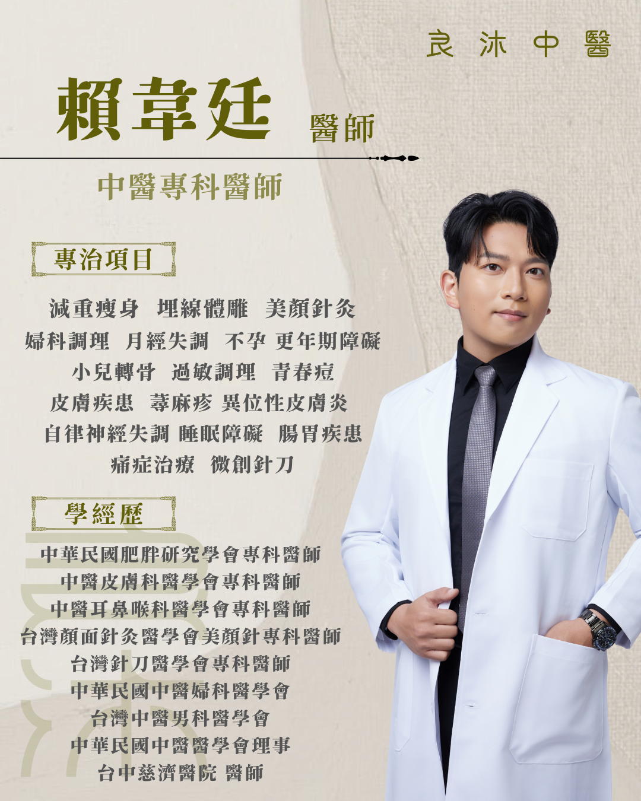

候診與櫃台空間
溫暖木質與淺色系空間，降低傳統醫療場域的距離感。


關 於 良 沐 About
良沐中醫診所希望成為患者長期調理路上的陪伴者。從體質、生活節奏到症狀變化，醫師以中醫辨證出發，提供適合個人的調理方向。
我們重視第一次看診的安心感，也重視每一次回診的追蹤。無論是健康減重、婦科產後、兒童成長或過敏調理，都以穩定、溫和、可持續為核心。

院 所 介 紹 Clinic
以明亮木質、乾淨留白與親切動線打造候診空間，讓減重調理、婦科照護與兒童看診都更安心。
溫暖木質與淺色系空間，降低傳統醫療場域的距離感。
保留兒童與家長都能安心停留的明亮區域。
以克制、乾淨的視覺語言，呈現專業且不冰冷的診所形象。
服 務 項 目 Service
不是靠節食硬撐，而是從體質辨證、代謝狀態、水腫循環與生活型態切入，搭配埋線與中藥調理，適合產後或壓力型肥胖族群。
針對月經失調、備孕、產後恢復、更年期不適等需求，提供溫柔且有脈絡的中醫調理。
包含兒童轉骨、過敏調理、腸胃與注意力相關照護，陪伴孩子在成長階段建立更穩定的體質。
依孩子成長階段、睡眠、食慾與體質狀態評估，協助把握發育關鍵期，讓成長調理更有方向。
從氣血循環、肌膚狀態與臉部緊緻感切入，適合希望以自然方式保養氣色與輪廓的人。
針對經期、體質、壓力與荷爾蒙變化帶來的不適，提供細緻且長期可追蹤的中醫照護。
預 約 流 程 Appointment
點選網站上的 LINE 預約按鈕，直接進入良沐官方帳號。
簡單說明想諮詢的方向，例如減重、婦科、小兒轉骨或過敏調理。
由診所協助確認適合的看診時段與醫師，讓初診安排更安心。
Doctors

中醫兒科專科醫師
專長減重瘦身、埋線體雕、體態調整、兒少轉骨、小兒注意力不集中、過敏調理、腸胃疾患、婦科助孕與美顏針灸。

中醫專科醫師
專長減重瘦身、埋線體雕、美顏針灸、婦科調理、月經失調、不孕、更年期障礙、皮膚疾患、自律神經與睡眠調理。
Clinic Hours
週一至週五早診暫不看診，週六晚診暫不看診。實際門診異動請以診所公告為準。
| 時間 | 週一 | 週二 | 週三 | 週四 | 週五 | 週六 | 週日 |
|---|---|---|---|---|---|---|---|
| 早診09:00-12:00 | 黃韋勝 | 休診 | |||||
| 午診13:30-17:00 | 賴韋廷 | 黃韋勝 | 賴韋廷 | 黃韋勝 | 賴韋廷 | 賴韋廷 | |
| 晚診17:30-21:00 | 賴韋廷 | 黃韋勝 | 賴韋廷 | 黃韋勝 | 賴韋廷 |
最 新 公 告 News
良沐中醫診所將於 2026.05.11 至 2026.05.31 期間試營運。試營運期間門診時段與服務內容，請以診所最新公告為準。
開幕當天將安排專業醫師團隊健康諮詢，並準備手工茶點與各位相聚，誠摯邀請您蒞臨同歡，一起開啟健康新篇章。
衛 教 文 章 Health
減重體質調理
埋線體雕
兒童照護
過敏調理